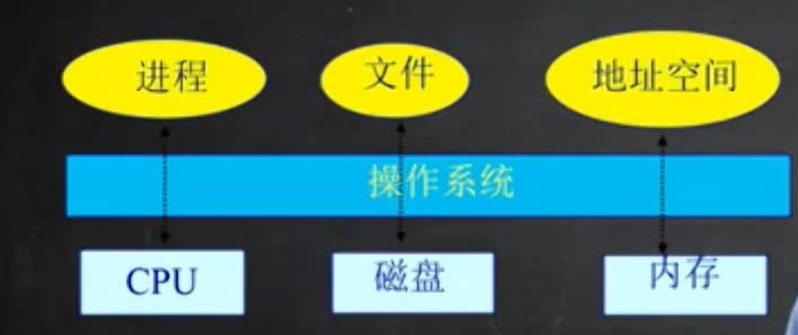

操作系统的定义：没有一个完整、精确、公认的定义。
从功能和特点来区分：
1、对上，从用户角度看，操作系统是一个软件，管理应用程序；为应用程序提供服务；杀死应用程序
2、对下，管理外设，分配资源。

操作系统层次架构：
硬件之上，应用程序之下。
操作系统位于应用软件之下，为应用软件提供服务支撑。
Linux、Windows、Android的界面属于外壳（Shell），而不是内核（Kernel）kernel是操作系统研究的重点，在Shell之下。
操作系统对硬件的管理，最主要的部分分为三大块：
1、cpu
1、1、cpu调度
1、2、进程线程管理
2、内存
2、1、物理内存的管理
2、2、虚拟内存的管理（给上层的应用提供相对独立，一个尽可能大的内存空间）
3、磁盘
3、1、文件系统管理
4、中断处理于设备驱动

OS Kernel的特征：
1、并发
计算机系统中同时存在多个运行的程序，需要OS管理和调度。
并发：在一个时间段内，多个程序同时执行。
并行：在一个时间点上，多个程序同时执行。
只有在多核（多个cpu）条件下，os才可能出现并行。
2、共享
”同时“访问
互斥共享
3、虚拟
利用多道程序设计技术，将cpu虚拟为进程，将磁盘虚拟为文件，将内存虚拟为地址空间，让每个用户都觉得有一个计算机专门为他服务。
4、异步
程序的执行不是一贯到底，而是走走停停，向前推进的速度不可预知。但是只要运行环境相同，OS需要保证程序的运行结果也要相同。
学习最新操作系统：
为什莫学习操作系统难度很大？
1、操作系统很大
Windows XP有4500万行
2、实际操作系统，理解其实现原理
3、操作系统管理并发
4、操作系统代码管理原始硬件
5、操作系统代码必须是高效的，低耗CPU、内存、磁盘的
6、操作系统必须比用户程序拥有更高的稳定性。（操作系统出错意味着机器出错）
7、操作系统是系统安全的基础。
8、操作系统需要权衡：
空间与时间
性能和可预测性
公平和性能
9、硬件方面，操作系统需要：
良好的硬件管理；
合理的资源分配；
例如：硬盘速度跟CPU，内存相差很多，操作系统需要处理。
如何学好操作系统？
我听过的我会忘记，我看到的我能记住，只有我做过的我才能理解。
操作系统实例：
UNIX家族

Linux家族

UNIX与Linux的亲密关系
二者的关系，不是大哥和小弟，"UNIX 是 Linux 的父亲"这个说法更怡当。之所以要介绍它们的关系，是因为要告诉读者，在学习的时候，其实 Linux 与 UNIX 有很多的共通之处，简单地说，如果你已经熟练掌握了 Linux，那么再上手使用 UNIX 会非常容易。
二者也有两个大的区别：
- UNIX 系统大多是与硬件配套的，也就是说，大多数 UNIX 系统如 AIX、HP-UX 等是无法安装在 x86 服务器和个人计算机上的，而 Linux 则可以运行在多种硬件平台上；
- UNIX 是商业软件，而 Linux 是开源软件，是免费、公开源代码的。
Linux 受至旷大计算机爱好者的喜爱，主要原因也有两个：
- 它属于开源软件，用户不用支付可费用就可以获得它和它的源代码，并且可以根据自己的需要对它进行必要的修改，无偿使用，无约束地继续传播；
- 它具有 UNIX 的全部功能，任何使用 UNIX 操作系统或想要学习 UNIX 操作系统的人都可以从 Linux 中获益。
开源软件是不同于商业软件的一种模式，从字面上理解，就是开放源代码，大家不用担心里面会搞什么猫腻，这会带来软件的革新和安全。
另外，开源其实并不等同于免费，而是一种新的软件盈利模式。目前很多软件都是开源软件，对计算机行业与互联网影响深远。
近年来，Linux 已经青出于蓝而胜于蓝，以超常的速度发展，从一个丑小鸭变成了一个拥有庞大用户群的真正优秀的、值得信赖的操作系统。历史的车轮让 Linux 成为 UNIX 最优秀的传承者。
Android 是一种基于Linux的自由及开放源代码的操作系统，主要使用于移动设备，如智能手机和平板电脑，有Google公司和开放手机联盟领导以及开发。
Windows家族